UDN
Search public documentation:
GettingStartedContentCH
English Translation
日本語訳
한국어
Interested in the Unreal Engine?
Visit the Unreal Technology site.
Looking for jobs and company info?
Check out the Epic games site.
Questions about support via UDN?
Contact the UDN Staff
日本語訳
한국어
Interested in the Unreal Engine?
Visit the Unreal Technology site.
Looking for jobs and company info?
Check out the Epic games site.
Questions about support via UDN?
Contact the UDN Staff
入门指南: 内容创建
概述
内容导入方法
- 在内容浏览器中点击
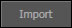
按钮。 - 导航到包含要导入的内容的FBX文件并选中它。
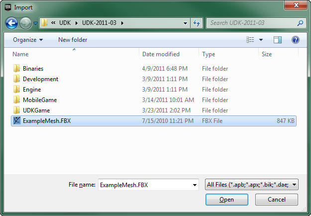
- 在出现的导入对话框中，选择适当的设置并点击
 按钮。(请参照FBX导入属性页面获得关于可用选项的完整介绍。)
按钮。(请参照FBX导入属性页面获得关于可用选项的完整介绍。)

- 导入过程将会开始，显示了进度：

静态网格物体
 这些网格物体可以用于放置在关卡中的很多不同类型的Actor。一般，静态网格物体是用于创建世界几何体和装饰物的 StaticMeshActor 、创建移动对象的 InterpActor 或创建刚体物理对象的 KActor 的可视化表现。事实上，任何具有StaticMeshComponent的Actor都可以使用静态网格物体。
关于创建及导入静态网格物体的指南，请访问FBX静态网格物体通道页面。
静态网格物体编辑器
一旦导入静态网格物体后，就可以在静态网格物体编辑器中查看静态网格物体并可以对其各个方面进行修改。
这些网格物体可以用于放置在关卡中的很多不同类型的Actor。一般，静态网格物体是用于创建世界几何体和装饰物的 StaticMeshActor 、创建移动对象的 InterpActor 或创建刚体物理对象的 KActor 的可视化表现。事实上，任何具有StaticMeshComponent的Actor都可以使用静态网格物体。
关于创建及导入静态网格物体的指南，请访问FBX静态网格物体通道页面。
静态网格物体编辑器
一旦导入静态网格物体后，就可以在静态网格物体编辑器中查看静态网格物体并可以对其各个方面进行修改。
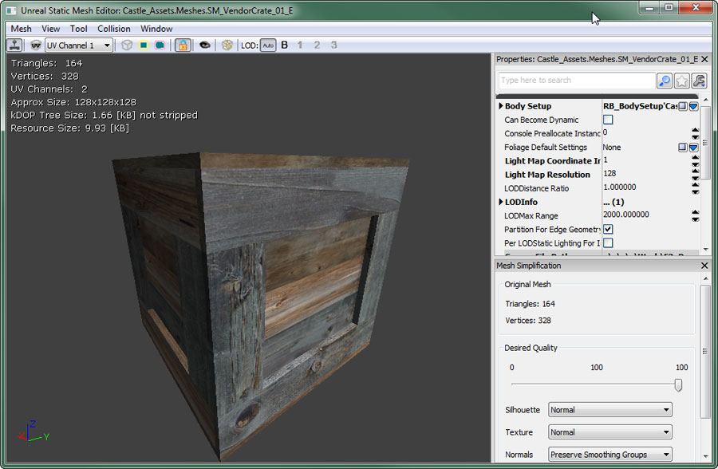
这里可以修改网格物体的全局属性、可以导入LOD网格物体、可以管理UV集合，并且可以添加或删除简化的碰撞几何体。 Collision（碰撞） 如果需要，静态网格物体可以针对渲染网格物体的实际三角形计算碰撞，但是一般它们使用一个单独的简化碰撞几何体进行计算，以便降低碰撞计算的复杂度，从而提高性能。在以下的图片中，红色和绿色的现况显示了碰撞所使用的几何体。你可以看到这比阴影化的渲染网格物体更加简单，但是它定义了足以满足大部分情况的碰撞计算的一般形状。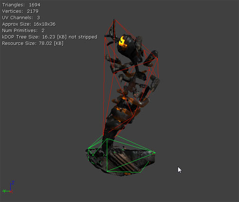
可以在外部建模应用程序中创建简化的碰撞几何体，并将其随同渲染网格物体一同导入。它可以是完全自定义的碰撞几何体。静态网格物体编辑器也包含了用于向导入的网格物体添加简化的碰撞几何体的功能。这些工具不是那么灵活，但在某些情况下很好用。 关于静态网格物体的碰撞的概述请参照碰撞参考指南页面。 细节层次级别(LOD) level of detail(细节层次级别) 系统是内置的，允许根据网格物体在屏幕上的尺寸来渲染不同的网格物体。这是个很大的优化，因为您可以让网格物体具有不同的复杂度，每个网格物体有它们自己的材质；在近镜头处渲染细节网格物体，随着相机变远则切换到具有较低细节的网格物体，这时没有必要呈现复杂的细节。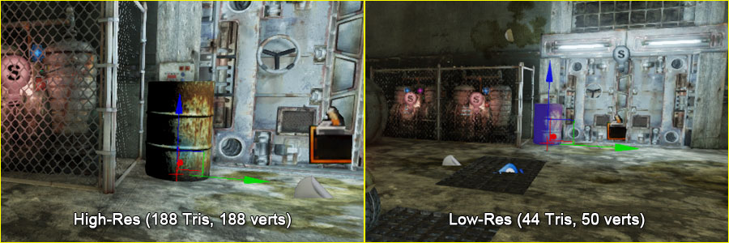
可以在静态网格物体编辑器导入并设置静态网格物体资源的LOD网格物体。骨架网格物体
 这些网格物体可以进行动画；或者说可以把动画应用到网格物体的骨骼上，从而是它们产生动画。也可以对它们应用顶点变形目标，可以通过Skeletal Controller(骨架控制器)来独立地控制每个骨骼。这些网格物体也创建了特殊的定位器，称为Socket（插槽），它附加到骨架网格物体的骨骼上 和/或 同那些骨骼有些偏移量，然后可以附加其他物体到插槽上面。
骨架网格物体一般用于角色、武器、载具及任何其他需要除了简单平移及旋转之外的复杂动画的对象。
这些网格物体可以进行动画；或者说可以把动画应用到网格物体的骨骼上，从而是它们产生动画。也可以对它们应用顶点变形目标，可以通过Skeletal Controller(骨架控制器)来独立地控制每个骨骼。这些网格物体也创建了特殊的定位器，称为Socket（插槽），它附加到骨架网格物体的骨骼上 和/或 同那些骨骼有些偏移量，然后可以附加其他物体到插槽上面。
骨架网格物体一般用于角色、武器、载具及任何其他需要除了简单平移及旋转之外的复杂动画的对象。
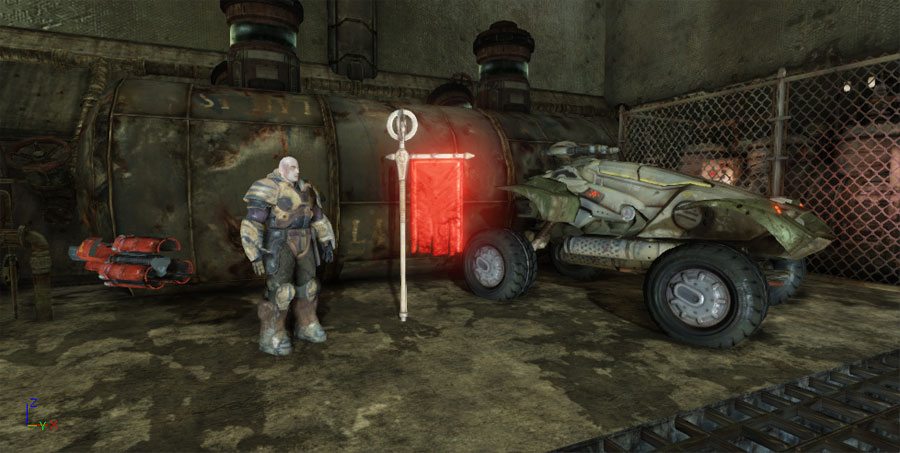
关于创建及导入骨架网格物体的指南，请访问FBX骨架网格物体通道页面。 物理资源 物理资源是指包含骨架网格物体的物理设置的对象，用于计算骨架网格物体的物理仿真及碰撞。它们从本质上讲是一些通过约束链接在一起的刚体，来模拟骨架网格物体的形状及需要的运动功能。 可以在PhAT物理编辑器中创建及编辑物理资源。这个工具用于可视化地编辑组成物理资源的刚体及约束。
可以在PhAT物理编辑器中创建及编辑物理资源。这个工具用于可视化地编辑组成物理资源的刚体及约束。
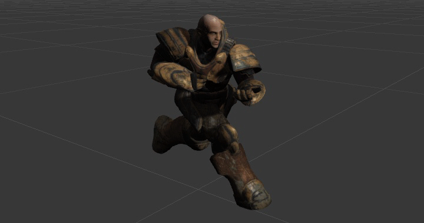
一组相关的动画序列可以分组到一个称为AiniSet（动画集）的容器中。通常，特定骨架网格物体的所有动画或共享同样骨架设置一组骨架网格物体将会一个单独的动画集中。 在UnrealEd的动画集编辑器中可以按某种方式来预览及修改动画。关于查看及修改动画的完整概述，请参照AnimSet编辑器用户指南页面。 关于虚幻引擎3中的动画系统的详细概述，请访问动画概述页面。关于导入动画到虚幻引擎3中的指南，请参照FBX动画通道页面。 动画树 虚幻引擎3使用了‘混合树’的思想，称为AnimTrees(动画树)，可以多个动画数据源混合到一起。这个方法使您可以清晰地管理多个动画的混合方式，并且随着您不断地前进使您可以轻松地以可预知的方式添加多个动画。这些功能一般用于玩家和其他角色，用于控制及混合不同的运动动画。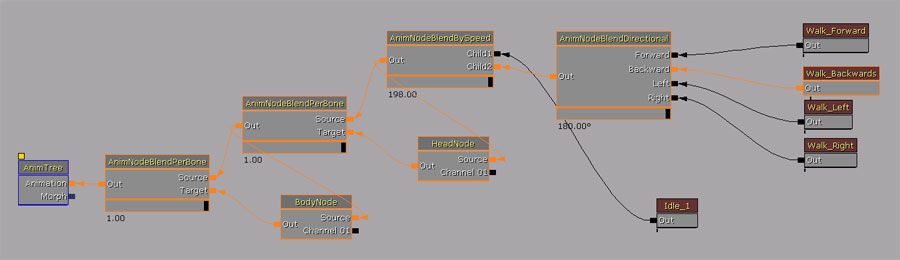
AnimTrees也提供了使用骨架控制器和顶点变形目标的功能，以下进行了详细介绍。载具也可以使用动画树通过使用顶点变形目标和通过骨架控制器直接控制骨骼来获得所需的任何动画及通过可视化的局部损坏效果。 关于创建及编辑动画树的更多信息，请参照 动画树用户指南。 骨架控制器 骨架控制器或SkelControls，使您可以程序化地修改骨架网格物体中的一个骨骼或一组骨骼。比如，有一些骨架控制器用于任意地变换一个单独的骨骼、强制一个骨骼朝向另一个骨骼或其他位置、设置一个IK肢体求解器。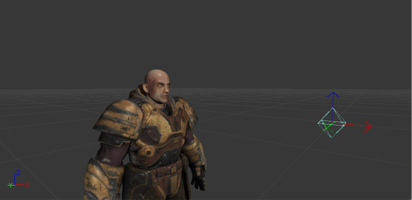
SkelControls是在动画树编辑器中创建的，并且可以连接到一起组成链，每个SkelControl影响一个骨骼，而每个SkelControl都应用在前一次结果之上。 关于骨架控制器及使用它们来操作骨架网格物体的概述，请参照使用骨架控制器页面。 顶点变形目标 顶点变形目标是实时地修改骨架网格物体的一种方法，但是比基于骨骼的骨架动画有更多的控制权。一个静态顶点变形目标是一个具有同样顶点数和面熟的底层多边形的现有骨架网格物体版本。 比如，您或许在您的3D建模程序中创建了一个角色的微笑版本，并把它作为‘smile（微笑）’顶点变形目标导入。然后在游戏中您可以应用这个顶点变形目标来修改脸部上的顶点，从而使您的人物产生微笑的效果，但是对每个顶点移动量的多少可以有很大的控制权。 顶点变形目标通常也用于在载具或其他物体上创建伤害毁坏效果。
顶点变形目标通常也用于在载具或其他物体上创建伤害毁坏效果。
 关于顶点变形目标及其应用的更多信息，请访问顶点变形目标页面。
Sockets(插槽)
插槽从本质上讲是命名的定位器，它可以附加到一个骨架网格物体的骨骼上并可以同骨骼发生偏移。这提供了一种附加其他对象的简单方法，比如附加粒子特效或其他网格物体到骨架网格物体的特定位置处，该位置可以由美工人员在AnimSet编辑器进行设置并且程序员可以在代码中引用该位置。
关于顶点变形目标及其应用的更多信息，请访问顶点变形目标页面。
Sockets(插槽)
插槽从本质上讲是命名的定位器，它可以附加到一个骨架网格物体的骨骼上并可以同骨骼发生偏移。这提供了一种附加其他对象的简单方法，比如附加粒子特效或其他网格物体到骨架网格物体的特定位置处，该位置可以由美工人员在AnimSet编辑器进行设置并且程序员可以在代码中引用该位置。
 关于插槽的详细介绍可以在骨架网格物体插槽页面找到。
关于插槽的详细介绍可以在骨架网格物体插槽页面找到。
材质和贴图
- Diffuse(漫反射)
- DiffusePower(漫反射次幂)
- Emissive(自发光)
- Specular(高光)
- SpecularPower(高光次幂)
- Opacity(透明度)
- OpacityMask(透明度蒙板)
- Distortion(变形)
- TransmissionMask(传输蒙板)
- TransmissionColor(传输颜色)
- Normal(法线)
- CustomLighting(自定义光照)
- CustomLightingDiffuse(自定义光照漫反射)
- AnisotropicDirection(各向异性方向)
- WorldPositionOffset(世界位置偏移)
- Displacement(位移)
- TessellationFactors(细分因数)
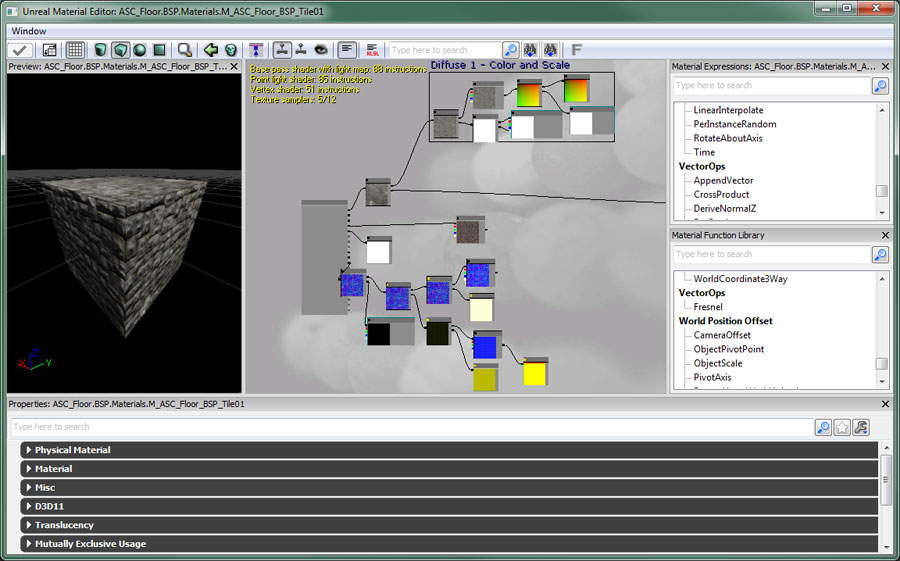
关于每个材质表达式的全部指南可以在材质纲要中找到。各种常见示例及有用的材质创建技术及效果可以在材质实例页面找到。 实例化材质 在虚幻引擎3中，材质实例化可以用于材质外观改变，不必重新编译材质。在不进行材质重新编译的情况下，不支持材质的一般修改，所以实例仅限于修改预定义的材质参数的值。参数在编译后的材质中通过唯一的名称、类型和默认值进行静态地定义。材质实例可以动态地为这些参数提供一个新值，仅需要非常少的性能消耗。 关于虚幻引擎3中的实例化材质的更多信息，请访问实例化材质页面。关于材质实例编辑器的概述，请参照材质实例编辑器用户指南页面。 材质实例内容常量 MaterialInstanceConstant(材质实例内容常量)对象允许用户覆盖材质上的定义的参数集合，从而创建给定材质的自定义实例。实例化材质的参数可以由美工人员进行设置来创建不同的主题变种，关卡设计人员可以使用Matinee修改这些参数，程序员可以在游戏中通过代码修改这些参数。 使用MaterialInstanceConstants创建变种的简单示例如下所示：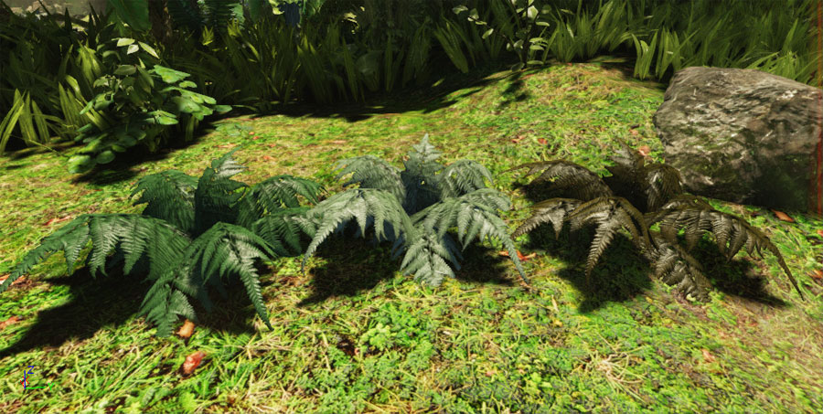
关于材质实例常量资源的更多信息可以在材质实例常量页面找到。 Material Instance Time Varying(随时间变化的材质实例) 随时间变化的材质实例是UE3中的另一种类型的实例化材质。它的主要目的是使得内容团队对材质随着时间如何改变有更多的控制。通常，为了获得随着时间变化的材质，您必须使用代码驱动我们想避免的参数。 关于如何使用随着时间变化的材质实例的更多信息可以在随着时间变化的材质实例页面找到。 贴图 材质使用贴图进行许多不同的处理。它们可以简单地用作为应用到表面上的颜色信息，但是它们也可以作为蒙板或用在值需要随着对象的表面变化的其他的地方。贴图是通过 内容浏览器导入的。 关于创建及导入贴图的指南，请参照 导入贴图指南页面。关于虚幻引擎3中的贴图属性的完整介绍，请参照贴图属性页面。 Flipbook Textures(翻书贴图) Flipbook Textures(翻书贴图)是特殊的贴图，它提供了循环一系列子图像的功能，就像粒子系统中的粒子SubUV（子UV）动画的工作方式类似。但是，翻书贴图可以用在材质中，并且可以应用到世界中的任何表面上。这是在材质中创建有限动画的简单方法，不需要使用视频贴图(Bink视频)。 关于使用翻书贴图的信息，请参照翻书贴图页面。 Render To Texture(渲染到贴图) 引擎的渲染到贴图功能允许您动态地从不同的角度捕获场景到贴图资源上。这允许一些特效，比如远程相机、以及呈现出动态地反应场景的表面。 关于使用渲染贴图的信息，请参照渲染到贴图页面。粒子系统
 粒子系统是通过内容浏览器创建的，并且使用Cascade粒子编辑器进行构造。
粒子系统是通过内容浏览器创建的，并且使用Cascade粒子编辑器进行构造。
发射器类型
虚幻引擎3提供了几种不同的发射器类型，这些类型可以在同一个粒子系统中进行混合及匹配，来创建任何期望的特效。 Sprite(平面粒子) 一个平面粒子是一个单独的面向相机的方块。当使用平面粒子数据类型时，发射器发射的每个粒子都是应用了发射器的材质的粒子。这是所有发射器的默认类型，所以没有必要（也不可能）在Cascade中手动地应用这个类型。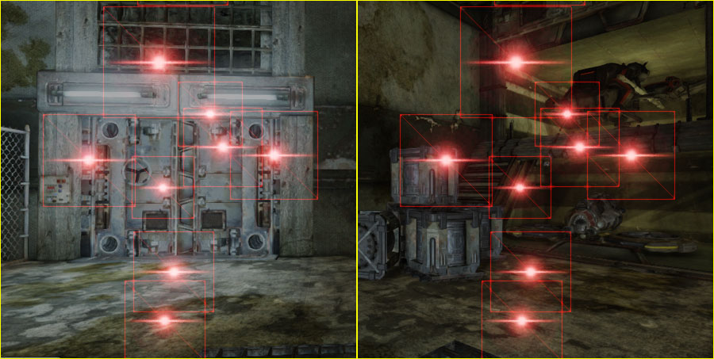
您可以在上面的图片中看到每个平面粒子的底层几何体。该图片也显示了无论如何放置相机，方块总是面向相机的。 平面粒子发射器通常用于创建测定体积特效，比如烟雾、火焰、灰尘等，及其他类似于火星、空气特效(雨、雪)、闪光等。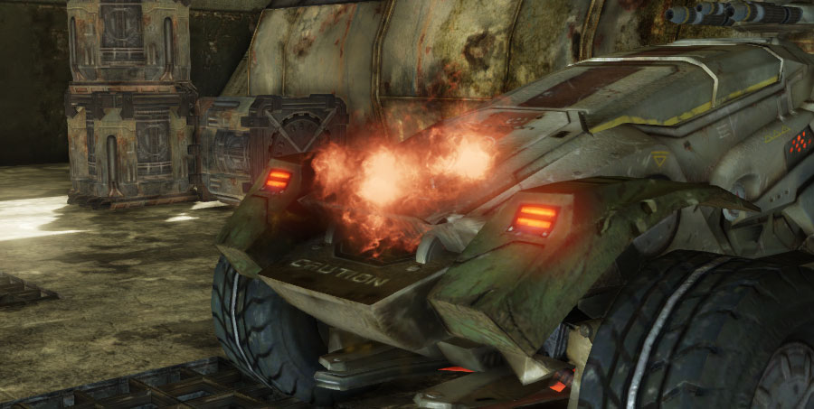
网格物体 使用网格物体数据类型的发射器发射的粒子渲染为一个静态网格物体而不是默认的平面粒子。网格物体发射器除了用于需要通过使用静态网格物体呈现三维效果的其他特效外，一般用于创建爆炸或破坏产生残骸，比如岩石块、载具配件或者木头碎片。 AnimTrail(动画尾迹)
AnimTrail(动画尾迹)数据类型通过在多个粒子首尾相连的之间使用伸展的方块，使得发射的粒子构成一个尾迹，从而对骨架网格物体的动画作出反应。这些发射器可以用于改进由于动画而产生的运动的效果，比如挥砍的剑产生的条纹。
请参照动画尾迹页面获得关于创建及使用AnimTrail发射器的更多信息。
Beam(光束)
光束发射通过使用在它所发射的过个首尾相连的粒子之间伸展的方块在源位置和目标位置之间形成一个光束。这些发射器可以用于创建激光或其他光束类型的特效。
AnimTrail(动画尾迹)
AnimTrail(动画尾迹)数据类型通过在多个粒子首尾相连的之间使用伸展的方块，使得发射的粒子构成一个尾迹，从而对骨架网格物体的动画作出反应。这些发射器可以用于改进由于动画而产生的运动的效果，比如挥砍的剑产生的条纹。
请参照动画尾迹页面获得关于创建及使用AnimTrail发射器的更多信息。
Beam(光束)
光束发射通过使用在它所发射的过个首尾相连的粒子之间伸展的方块在源位置和目标位置之间形成一个光束。这些发射器可以用于创建激光或其他光束类型的特效。
 *Ribbon(条带)
条带类型数据发射的每个粒子和前一个粒子相连，相连粒子的首尾之间有延伸的方块，从而构成一种条带型效果。条带发射器可以用于创建更加通用或任意的尾迹(和前面提到的和动画驱动的AnimTrails相对)。
*Ribbon(条带)
条带类型数据发射的每个粒子和前一个粒子相连，相连粒子的首尾之间有延伸的方块，从而构成一种条带型效果。条带发射器可以用于创建更加通用或任意的尾迹(和前面提到的和动画驱动的AnimTrails相对)。
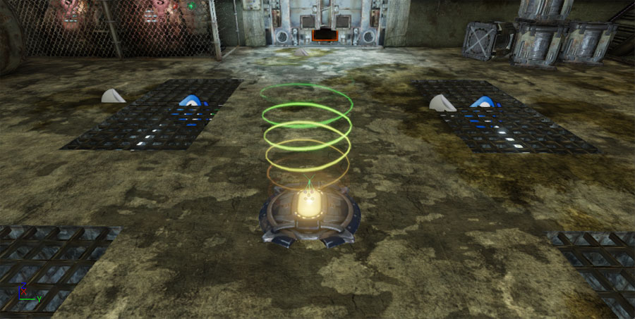
PhysX PhysX数据类型发射器以和标准平面粒子数据类型及网格物体数据类型类似的方式发射平面粒子或网格物体，但是这些粒子是由流体物理仿真控制的。模块
粒子的外观和行为由一些模块控制。每个模块控制一个决定了粒子的外观或行为的特定方面。 可以通过模块控制的例子包括：- 每个粒子的存活时间。
- 粒子的产生位置。
- 粒子的移动方向及速度。
- 粒子的大小。
- 粒子的颜色。
- 粒子的旋转方向及速度。
- 粒子是否和几何体发生碰撞。
后期处理特效
 这个基于节点的编辑器允许添加及放置各种可用的特效模块。
关于虚幻引擎3中特定类型的特效的其他信息，请参照以下页面：
亮度溢出
[[Bloom][光溢出]是一种发光特效，当看一个比较暗的背景上的一个非常明亮的物体时会发生这种现象。
这个基于节点的编辑器允许添加及放置各种可用的特效模块。
关于虚幻引擎3中特定类型的特效的其他信息，请参照以下页面：
亮度溢出
[[Bloom][光溢出]是一种发光特效，当看一个比较暗的背景上的一个非常明亮的物体时会发生这种现象。
| 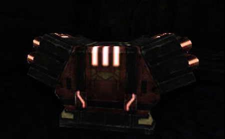 |  |
| 没有光溢出 | 具有光溢出 |
| 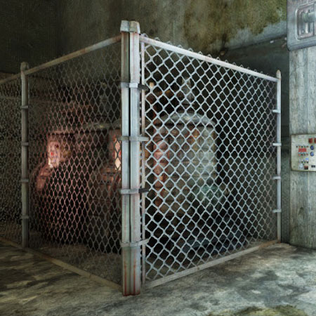 |  |
| 没有模糊特效 | 具有模糊特效 (BlurKernel = 2) |
 | 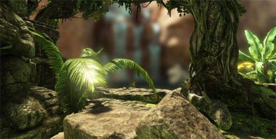 |
| 没有景深特效 | 具有景深特效 |
| 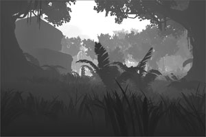 |  | 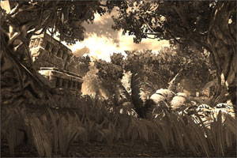 |
| 可视化的场景深度 | 基于距离的降低饱和度处理 | 棕褐色场景色调 |
| 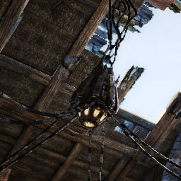 | 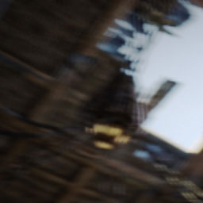 |
| 没有运动模糊 | 具有运动模糊 (及快速的相机运动) |
| 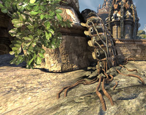 |  |  |
| 没有环境遮挡 | 具有环境遮挡 | 仅呈现环境遮挡 |